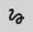
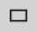
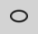
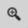

Scratch Pad Page Editor
The scratch pad page editor lets you edit existing or new scratch pad pages.

Scratch Pad Page Header Toolbar
The scratch pad page header toolbar has the following functions:
Save - Saves the scratch pad page. |
|
Download - Download the scratch pad page with it's current annotations. The page can be downloaded into a PNG image or into a PDF document. The layout of the exported PDF document can be customized using the Export to PDF options form. |
|
|
Go to 3D - Closes the scratch pad page and changes the Knowledge Book viewer's view to same position where the scratch pad page was created. |
|
Undo - Undo annotation creation, modification or deletion action. |
|
Redo - Redo annotation creation, modification or deletion action. You can only redo an action after you have undone an action. |
|
Scratch Pad Page Name - The name of the scratch pad page. The name cannot be empty. |
View Change History - Displays a dialog box that shows when was the scratch pad page created and by whom. Also shows when the scratch pad page was last modified and by whom. |
|
|
Exit - Exits the scratch pad page, navigating back to the previously opened page. |


Scratch Pad Page Draw Mode Toolbar
The scratch pad page draw mode toolbar has the following functions:
|
Selection - Default mode when starting up the editor. Used to select annotations that are already created. |
 |
Free Draw - Allows you to freely draw lines. This mode allows continuous drawing. |
|
Text - Allows you to create text. Once the text is created, the mode will be switched to selection. |
 |
Rectangle - Allows you to create rectangles. Once the rectangle is created, the mode will be switched to selection. |
 |
Ellipse - Allows you to create ellipses . Once the ellipse is created, the mode will be switched to selection. |
Arrow - Allows you to create arrows. Once the arrow is created, the mode will be switched to selection. |


Scratch Pad Page View Properties Toolbar
The scratch pad page view properties toolbar has the following functions:
 |
Zoom - Lets you zoom in/out on the scratch pad page. The zoom is done via a slider, which appears after clicking this function. |
Scratch Pad Page Edit Toolbar
The scratch pad page edit toolbar has the following functions:
Font Family - Allows you to choose what font to use. The default is Times New Roman. |
|
Font Color - Allows you to modify the color of the text. The default is red. |
|
Text Size - Allows you to change the size of the text. The default is 30. Max value is 100. h |
|
|
Italic - Allows you to change the text to italic. |
Bold - Allows you to change the text to bold. |
|
|
Text Alignment - Allows you to change the alignment of the text to Right, Left, Center, Justified. The default value is left. |
|
Fill Color - Allows you to change the color of the background for text blocks and shapes. The default color is transparent. |
|
Line Color - Allows you to change the color of the border for shapes or the color of the line for the arrow and free draw mode. The default value is red. |
|
Line Width - Allows you to change the size of the border of the shapes or the width of the line for the arrow and free draw mode. The default value is 2. The maximum value is 10. |


Changing the values of the options when there are no annotations selected will change the default values. Changing the value when there are annotation(s) selected will only modify the selected annotation(s). |
See Also: Scratch Pad Preferences
Zoom
The zoom function facilitates drawing detailed annotations on the scratch pad page. The range of the zoom function is from 100% (default view) to 400%.
Besides using the zoom slider control, you can also use your mouse or touch screen to zoom in/out:
Mouse
- Use the scroll wheel to zoom in/out.
- Hold the middle mouse button while moving your mouse to pan a zoomed-in view.
Touch Screen
- Use the Two Finger - Pinch Out gesture to zoom in and Two Finger - Pinch In gesture to zoom out.
- Use the Two Finger - Swipe gesture to pan a zoomed-in view.
- See the Viewer Navigation page for details about touch screen gestures.